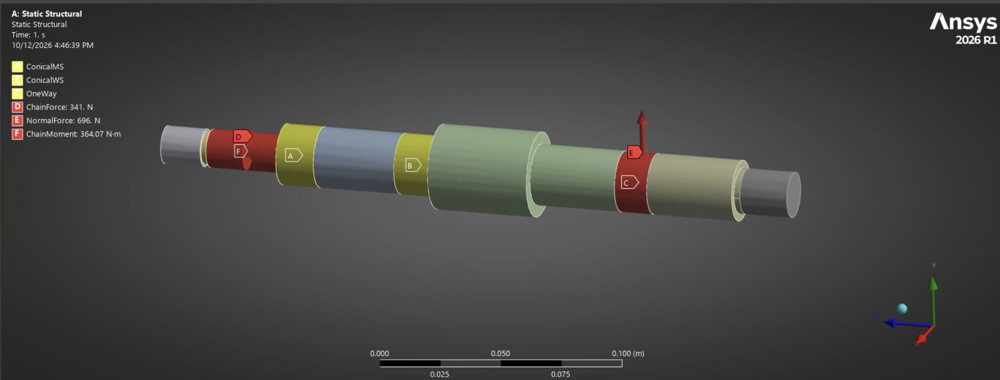

power transmission
transmit power from the motor/output shaft to the wheels.
designing a driveshaft to transmit motor power to the wheels while carrying the expected loads and integrating with the output shaft, support block, and wheel hub. the project emphasizes sound geometry, gd&t, and design for assembly.
the main requirements guiding the preliminary layout and analysis.
transmit power from the motor/output shaft to the wheels.
select geometry that can withstand the required forces and moments.
fit and function properly with the output shaft, support block, and wheel hub.
emphasize geometric dimensioning and tolerancing (gd&t) and design for assembly (dfa).
an early stepped-shaft layout showing the packaging and connection features to be developed.

a first-pass free-body and bending-stress check to estimate the loads on the shaft.

the shaft is approximated as a beam supported at the bearing/support locations. the free-body diagram includes a wheel bump force and a sprocket chain load, and the equations estimate the reactions at the supports.
the page estimates a wheel moment of about 99.8 n·m, a chain force of about 341 n, and a combined bending moment of about 364 n·m. from that bending estimate, the calculated bending stress is about 237 mpa.
the material comparison gives an approximate yield safety factor of 1.16 for 6061-t6 aluminum and 2.24 for 1045 carbon steel, using the yield strengths noted in the calculation.
these are preliminary estimates based on the shown assumptions and dimensions, not a final design validation. load cases, stress concentrations, fatigue, deflection, material condition, and the support/interface assumptions still need to be checked.
this is the stallout torque load case currently being set up to run in ansys.

the model is being prepared in ansys to run the stallout torque case. the setup labels a 341 n chain force, a 696 n normal force, and a 364.07 n·m chain moment, with conical contact regions identified in the assembly.
this screenshot documents the load setup; it is not a solved stress or deformation result. the model still needs to run, then its results can be checked against the design requirements.